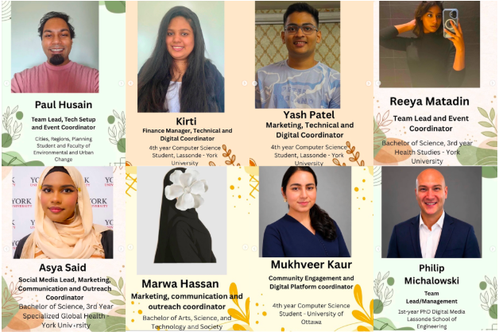

You Belong
Bringing residents and organizations into the same room — and keeping them there.

The Team
The Project
Team Members
Goals & Outcomes
The team set out to change the stigma around homelessness and educate the public about what people experiencing it are truly facing, while giving community organizations a shared space to coordinate on. They saw homelessness as more than a housing issue, treating it as a community integration challenge where stigma and isolation matter as much as shelter. The hoped for outcome was twofold, a community event that brings residents and partners together to learn directly and soften assumptions, and a digital platform that sustains those connections through event discovery, coordination, and feedback once people go home.
Strategies & Processes
Team C3 worked through direct research, stakeholder engagement, and iterative feedback. Early rapid research and a site visit to BetterStreet grounded the problem in real community dynamics, while partner conversations with HICC, YSB, and Trek for Teens shaped the design. The team used Miro boards for discussion, a 5 Whys analysis to find root causes, and short sprints with regular retrospectives to keep refining. Feedback drove every decision, letting the team cut ideas that did not serve partners and converge on a hybrid model. Across many disciplines, members divided roles by strength and reached synthesis through ongoing dialogue with partners and the teaching team.
Key Achievements
Team C3 produced a working digital platform prototype, deployed live on Vercel, with event discovery and registration for community members, a role based admin panel for organizers, and a structured anonymized feedback system. Alongside it, the team developed a low cost, adaptable community event model and reusable guidelines that partners can shape to their own neighbourhood and publish through the platform. Partners saw the prototype at demo day and confirmed event discovery and feedback as the highest value features. Together, the event and platform offer a foundation that future organizers could carry forward and deploy at a fuller scale.
Critical Evaluation
The project responds to both the social and informational barriers around homelessness. The event addresses stigma and the public understanding gap by bringing residents, organizations, and people with lived experience into one space to learn directly rather than rely on assumptions. The platform addresses fragmentation, giving siloed organizations shared infrastructure to coordinate, share events, and gather feedback. By pairing the two, Team C3 aimed to make sure the connections made in person do not fade once people go home. The work draws on how mental health and cancer were destigmatized through dedicated public education, applying that same patient approach to homelessness.
Recommendations
Team C3 learned that lasting impact starts with getting the foundation right and building real relationships, not just designing something that looks good on paper. The team came to see equity as responsiveness to difference rather than sameness, which reshaped how they designed feedback for different communities. Their main recommendation is to narrow the target audience, since both partners and other teams pointed to this as a gap. They also recommend running future events with more lead time so partners and sponsors can take part, and deploying the platform over a longer horizon to measure real impact on stigma and housing outcomes.
The Journey
Target SDG Goals
Starting Point
Team C3's theme was Community Integration, applied to homelessness and housing insecurity. The initial angle was broad, framed loosely around young adults and shaped by early partner contact with BetterStreet, which surfaced the challenge of engaging residents who hold NIMBY attitudes. From the start the team was drawn to two threads, shifting public understanding of homelessness and giving fragmented organizations a way to coordinate. That early framing carried the seed of what became a paired event and platform, though the specific audience and scope were still open questions the team would keep returning to as feedback came in.
Major Developments
Feedback steadily sharpened the work. An early decision removed a social worker facing portal, refocusing the platform on event organizers and community members. Team C3 explored and set aside several ideas, a resource directory that duplicated platforms like 211, a community forum that risked becoming hard to moderate, and an organizer only dashboard that left out the community. A midway review flagged scope drift, which the team tightened immediately. When BetterStreet warned a feedback channel could become chaos, they pivoted to structured anonymized surveys the same day. The event itself moved through online, on campus, and neighbourhood versions as constraints became clearer.
Challenges
Time was the steepest wall. Shifting the social stigma around homelessness takes patient, in person dialogue, but partners and sponsors need real lead time to take part, so the compressed timeline left Team C3 no room to fully stage the event or hear back from them. The platform faced the same squeeze, with too little time to field test the app with the community it was built for. Carrying two connected projects across many disciplines also brought communication challenges, since ideas rooted in one field can be hard to share. The team met this by dividing tasks to strengths and talking constantly.
Lessons Learned
Looking back, Team C3 felt the work could have been tighter with a single, united solution rather than two parallel projects, which stretched coordination and communication. The team would stay more on top of the Miro boards and keep a clearer shared task outline, since some messages were lost in the flow of the group chat. Narrowing the target audience earlier would have sharpened both the event and the platform. More broadly, they would build in the lead time that partners and sponsors need, so the event could be properly tested rather than designed for a window too short to see it through.
Future Direction + Continuation Feasibility
With more time, future events could run at a fuller scale, reach the audiences who can help end homelessness, and open dialogue between the different sides. Team C3's project could grow each event to neighbourhood scale, add multilingual support for newcomers and accessibility features for users with disabilities, link to municipal housing resource directories, and move toward longer term deployment with partners. The event model is designed to be repeatable and replicable across neighbourhoods, and the guidelines let partners host their own. The platform is built to sustain partnerships beyond the project, giving the work a realistic path to continue.
Responsible Interest Holders
The natural interest holders are the community partners already involved with Team C3, BetterStreet, YSB, HICC, and Trek for Teens, who shaped the project and could carry it forward. Frontline organizations such as shelters, outreach teams, and community support agencies could use the platform as a digital navigator in their daily work. Local sponsors and businesses could support events, while municipal services and government bodies could connect through resource directory integration. People with lived experience remain central, both as voices in the events and as participants whose feedback shapes the services offered to them.
Barriers
The clearest barrier is sustained engagement. Real impact on stigma or housing outcomes would need longer term deployment, ongoing partner commitment, and broader community adoption beyond the prototype. Events depend on partners and sponsors who need lead time and concrete plans to rally behind, and outreach can be slow. Keeping the platform's resource and event listings current relies on participating organizations continuing to update them. Questions of ownership, maintenance, and funding remain open, though HICC noted the platform could be fundable under Reaching Home. Narrowing the audience and proving value through a fully run event are the next hurdles for Team C3.